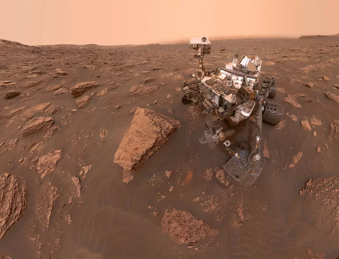

Ali Majidi
Ali Majidi
Today
NASA launches a Probe to Mars!

The goal of the Mars Exploration Program is to explore Mars and to provide a continuous flow of scientific information and discovery through a carefully selected series of robotic orbiters, landers and mobile laboratories interconnected by a high-bandwidth Mars/Earth communications network.
 In comparison to the other terrestrial planets, Mars is neither too big nor too small. This means that it preserves the record of its formation and can give us insight into how the terrestrial planets formed. It is the perfect laboratory from which to study the formation and evolution of rocky planets. Scientists know that Mars has low levels of geological activity. But a lander like InSight can also reveal just how active Mars really is.